Varhany v kostele P.Marie růžencové v obci Louka
Dvoumanuálové varhany s pedálem
v římskokatolickém kostele P.Marie růžencové v obci Louka u Veselí nad
Moravou navrhla a postavila varhanářská dílna Robert
Ponča VARHANY z Krnova. Stavba nástroje trvala 9 měsíců -
od ledna do října 2003. |
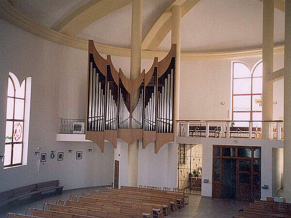
Varhany jsou umístěny excentricky v pravé části hudebního kůru a částečně před něj vysazeny směrem do prostoru kostela. Nástroj je z části postaven na ocelové balkonové konstrukci a navíc zavěšen na nosném sloupu zaklenutí kostela. Moderní dubová varhanní skříň je v prospektu rozvržena do šesti věží, které jsou jak výškově, tak prostorově členěny. Ve věžích jsou v pohledu umístěny cínoolověné píšťaly prospektových rejstříků (48 píšťal Principalbass 16'), stojící na unitové vzdušnici.
|
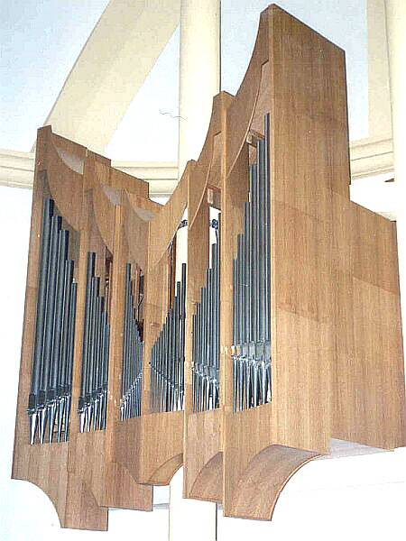
Varhany mají 20 rejstříků, z toho 3 rejstříky jsou vybudovány z unitové řady v prospektu varhan. Jeden rejstřík (Trompeta 8‘) je jazykový. Traktura varhan je čistě elektrická, vzdušnice jsou zásuvkové (plus skříňová u unitové řady). Píšťalové stroje jsou děleny do dvou manuálů a pedálu. Varhany mají celkově okolo 1600 píšťal (i díky složitým smíšeným hlasům), vzduchem je zásobují 3 měchy a ventilátor. Každý z manuálových strojů má své tremolo. Napájení obvodů traktury manuálů i pedálu zajišťují oddělené zdroje, samostatně je napájeno i unitové zařízení, paměťové kombinace a ventilátor. Dispozice:
|
I.
Manuál - hlavní stroj |
II.
Manuál - žaluziový stroj |
Pedál |
||||||
1. |
Principal |
8' |
10. |
Gedekt |
8' |
18. |
Subbass |
16' |
2. |
Hohlflöte |
8' |
11. |
Principal |
4' |
19. |
Principalbass |
16' |
3. |
Oktav |
4' |
12. |
Rohrflöte |
4' |
20. |
Oktavbass |
8' |
4. |
Spitzflöte |
4' |
13. |
Flageolet |
2' |
21. |
Rohrgedekt |
8' |
5. |
Superoktav |
2' |
14. |
Larigot 2x |
1 1/3' + 1' |
22. |
Choralbass |
4' |
6. |
Mixtur 4 - 5x |
1 1/3' |
15. |
Scharf 3 - 5x |
1' |
23. |
Nachthorn |
2' |
7. |
Sesquialthera 2x |
2 2/3' + |
16. |
Trompette |
8' |
|||
Spojky a pomocná
zařízení: |
||||||||
8. |
II/I | 9. |
Tremulant I | Žaluzie | ||||
24. |
I/P |
17. |
Tremulant II | 4 paměťové kombinace | ||||
25. |
II/P |
26. |
RR + | Tutti, Crescendo | ||||
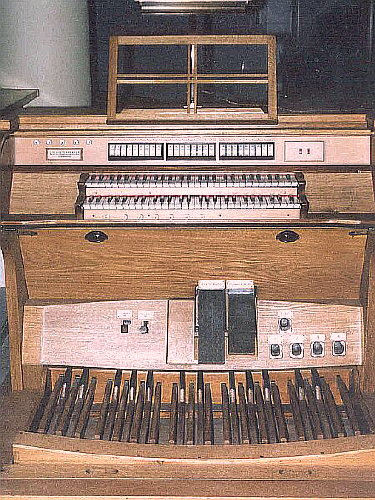
Hrací stůl je umístěn na pojízdném pódiu, varhaník si tak může zvolit místo na kůru, odkud nástroj bude ovládat. Skříň stolu je stejně jako skříň varhan v přírodní barvě dubu, pedál je rovnoběžný, radiální (německého typu s jednobarevnými klávesami). Registrace je ovládána sklopkami nad druhým manuálem, vlevo od sklopek je indikátor crescenda. Paměťové kombinace jsou zapínány tlačítky pod prvním manuálem nebo pistony nad prahem pedálu. Nad pedálem jsou i balanční šlapky rejstříkového crescenda a žaluzií.
|
U nás ojedinělé je netradiční řešení varhanní skříně.
Z prostorových i výtvarných důvodů nestojí varhany celé na ploše kůru,
jak je obvyklé, ale jsou zčásti zavěšeny před kůrem a vysunuty do prostoru
kostela. Toto řešení působí dojmem nebývalé lehkosti a výborně zapadá
do architektonického řešení vnitřku kostela. Hlavní varhanní skříň ukrývá
hlavní a žaluziový stroj, vzadu u obvodové zdi kůru je pak umístěna samostatná
dubová pedálová skříň, která není z běžného pohledu viditelná. Následující
fotografie zachycují některé fáze stavby skříně: |
| 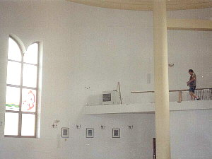 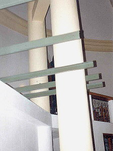 |
Na základovou konzolovitou konstrukci z ocelových profilů je připevněna desková podlaha nesoucí dubovou varhanní skříň, do deskové dřevěné konstrukce jsou kotveny dubové roznášecí rámy nesoucí vzdušnice a ostatní zařízení varhan: |
| 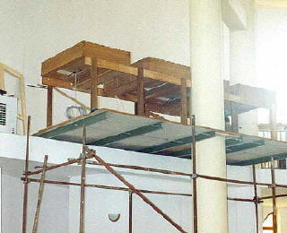 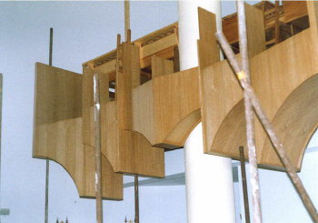 |
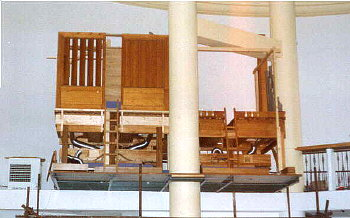Na
této fotografii je patrné vnitřní uspořádání nástroje, žaluziová skříň,
vzdušnice i hliníkové hadice vzduchovodů od měchů ve spodní části nástroje.
Konstrukce varhan částečně obklopuje nosný sloup klenby kostela. |
|
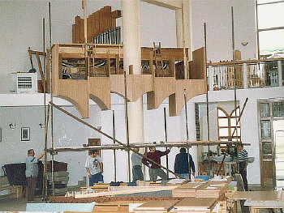Stavba
skříně (prospektové části), vzadu za nástrojem u obvodové zdi jsou dobře
viditelné dřevěné i kovové píšťaly pedálového stroje. |
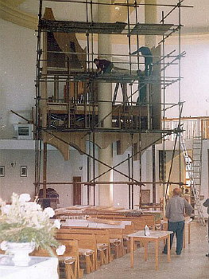Lešení pro stavbu prospektových věží skříně. Celá stavba byla na žádost obecně prospěšné společnosti, která ji financovala, uspíšena o dva měsíce oproti původnímu plánu, varhany tak byly zkolaudovány už v říjnu 2003. V budoucnu se počítá s doplněním nástroje o další jazýčkové rejstříky
- Posaune 16‘, Trompetenbass 8‘ a Clarion 4‘. |
Varhany v Louce představují moderně řešený, architektonicky
i zvukově zajímavý nástroj s jinak standardním vybavením. Za pozornost
stojí především netradiční varhanní skříň a využití kombinace zásuvkové
a skříňové vzdušnice v konstrukci nástroje, umožňující hospodárnější využití
prostoru. Svou dispozicí nástroj vyhovuje jak potřebám liturgie, tak i
koncertnímu využití. |
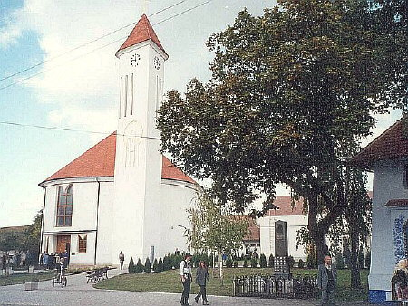
Kostel Panny Marie Růžencové v Louce u Veselí nad Moravou je novostavba z roku 1999, má půdorys tvaru lilie, ke kterému je excentricky přistavěna věž s mohutnou zvonicí. Věž má půdorysný tvar slzy - kapky rosy. Prostor lodi kostela je zaklenut železobetonovou skořepinou s roznášecími klenebnými rámy, které jsou neseny železobetonovými sloupy a nosnými zdmi kostela. Zastřešení kostela je realizováno kuželovou protáhlou plochou. V blízkosti kostela je pozoruhodná středověká kaplička.